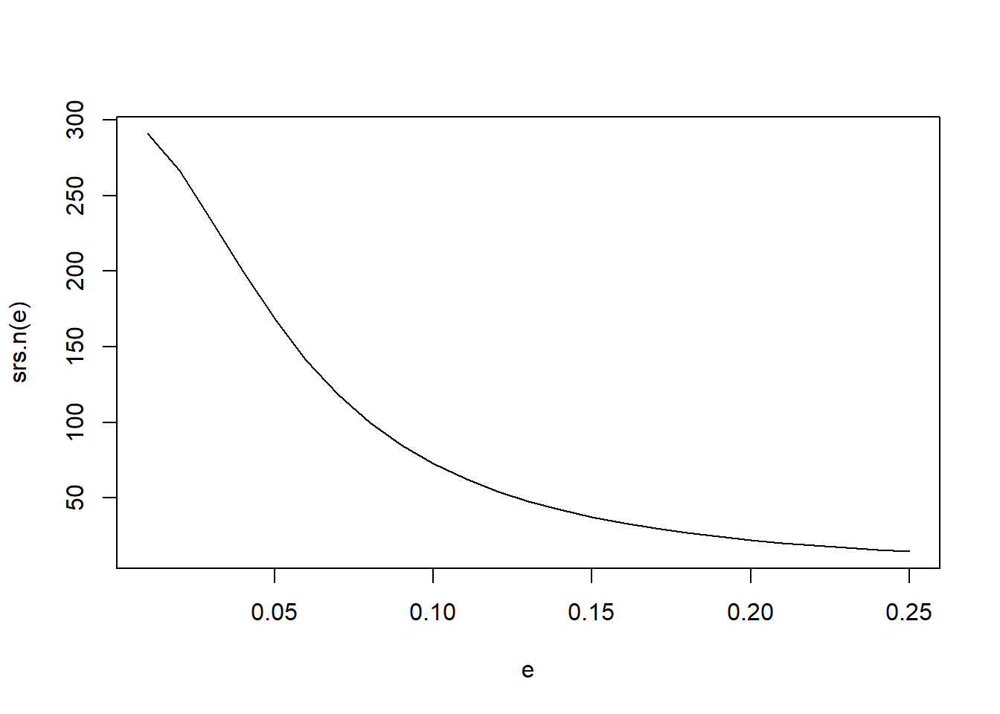

srs.n <- function(e){
n0 <- 1.96^2 / (4*e^2)
n <- n0 / (1+n0/300)
return(n)
}
e <- seq(.01, .25, by = .01)
plot(e, srs.n(e), type = "l")
srs.n(seq(.05, .25, by = .05))[1] 168.45182 72.75023 37.36771 22.23080 14.61766This semester, you will go on a real-world project that will directly impact the future of the Mathematics and Data Science programs at Chico State. Working collaboratively as a class, you will design, implement, and analyze an alumni survey to gather valuable insights about their experiences and career paths. This is your chance to apply the sampling and statistical analysis methods you’ve learned in a practical and meaningful way.
This project isn’t just about crunching numbers; it’s about teamwork, communication, and project management. As a class you will be responsible for:
This is a full class collaborative effort, requiring everyone’s active participation and contribution. Every student should take lead on at least one aspect or activity. Your collective efforts will provide valuable data to inform curriculum development, program improvements, and future initiatives within the Mathematics & Statistics departments. Embrace this opportunity to make a real difference!
Since most of the parameters to estimate are proportions we will determine the sample size under that framework. Our sampling frame (population size) is \(N=300\).
I created a graph to plot the sample size under an SRS framework using equation 2.30, 2.31 as a function of the margin of error e. We can use this to make a determination of a general total sample size that we will aim for in each of the sampling designs.
Multiple sampling designs were developed as described below.
Read in Sampling frame
The population size is determined by the size of our sampling frame, and the sample size was determined using the graph above and a class discussion.
We draw a simple random sample from the entire alumni population without stratifying by any specific variable. Each alumni has an equal probability of being selected, regardless of graduation year, major, or number of majors. This method is easy to implement and ensures that the sample is unbiased with respect to all known and unknown variables. While this approach may not capture differences in key subgroups (e.g., income variation by major or graduation year), it provides a fair and representative overview of the overall alumni population. Since the cost of observation is the same for each unit (zero), SRS is a reasonable choice, particularly when subgroup-specific insights are not the primary goal of the study.
In our study we chose to stratify the data to make sure that an alumnus graduation year was accurately represented in the sample. Satisfying typically improves the accuracy and representation of a sample and thus we can accurately account for differences in years. We chose to stratify by year specifically because alumni experiences, job placements, and pay may all depend on how long it has been since they graduated. This is especially important in the past 5-10 years because it would not be surprising if alumni who graduated in or around covid had a much different experience overall than those prior.
We chose to use proportional allocation for our results to more accurately represent the population as a whole. We made the stratum sample sizes proportional to the stratum population sizes. The formula for sample size being \(n_{h}=\frac{N_{h}}{N}n\) where \(N_{h}\) is the population size of the stratum we are concerned with.
set.seed(class.seed)
strata2.frame <- sampling.frame %>% arrange(expected_grad_year) # sort first
p.1 <- sum(strata2.frame$expected_grad_year==2015)*.5
p.2 <- sum(strata2.frame$expected_grad_year==2016)*.5
p.3 <- sum(strata2.frame$expected_grad_year==2017)*.5
p.4 <- sum(strata2.frame$expected_grad_year==2018)*.5
p.5 <- sum(strata2.frame$expected_grad_year==2019)*.5
p.6 <- sum(strata2.frame$expected_grad_year==2020)*.5
p.7 <- sum(strata2.frame$expected_grad_year==2021)*.5
p.8 <- sum(strata2.frame$expected_grad_year==2022)*.5
p.9 <- sum(strata2.frame$expected_grad_year==2023)*.5
p.10 <-sum(strata2.frame$expected_grad_year==2024)*.5
alloc <- ceiling(c(p.1, p.2,p.3,p.4,p.5,p.6,p.7,p.8,p.9,p.10))
strata.idx <- sampling::strata(data = strata2.frame, # data set
stratanames = "expected_grad_year",
size = alloc, # stratum sample sizes
method = "srswor") # method for selecting within strataNow we extract the unique person identifier (fixed_id) and the sampling probability from the selected sample.
We hypothesize that students who studied different focuses will be pursuing different types of careers and making different kinds of salaries. Students who double or triple majored will also not have the same experiences as those who share one of their majors. We expect that by stratifying by major, with those with more than one major in a separate stratum, we should be able to expect widely different stratum means for variables like annual income. Since different majors have different course requirements, their feedback on the university will also be different by major. Since we are interested in multiple variables and the observation cost in each stratum will be the same, in this case zero, proportional allocation makes sense as a choice.
First we create a new variable with either a student’s major or if they had multiple majors stored. Will Stratify by this variable
We have clusters of psych majors b/c their math major was secondary…
Let p be the proportion of total population sampled. We will calculate size of samples drawn from each strata as …. need equations/info here
need description
Basic organizing
# renaming to cluster for simplicity
sampling.frame$cluster <- sampling.frame$expected_grad_year
# getting unique cluster ids based on year
(all_clusters <- unique(sampling.frame$cluster)) [1] 2015 2016 2017 2018 2019 2020 2021 2022 2023 2024
2015 2016 2017 2018 2019 2020 2021 2022 2023 2024
29 20 27 32 40 25 29 36 35 25 [1] 29.8NOTE: the number of sampled clusters is based on the average of 30 grads per year to get roughly 150 individuals in the final total sample.
Sampling from clusters:
set.seed(class.seed)
# sampling the clusters
(sampled_clusters <- sample(all_clusters, size = m, replace = FALSE))[1] 2019 2020 2022 2018 2023Need to add weights manually since the
samplingpackage was not used.
Each method will randomly sample a different group of records, there undoubtedly will be substantial overlap. To keep track of which records were chosen in each design, we create separate variables for each design strategy containing the inclusion probability for that specific design. These variables are then added back to the sampling frame in Google Sheets.
sample.these <- sampling.frame %>%
select(fixed_id) %>%
left_join(srs.sample) %>%
left_join(strata.major.sample) %>%
left_join(strata.year.sample) %>%
left_join(cluster.sample)
head(sample.these)# A tibble: 6 × 5
fixed_id srs_prob strata_major_prob strata_year_prob cluster_prob
<dbl> <dbl> <dbl> <dbl> <dbl>
1 1 0.503 0.512 0.517 NA
2 2 0.503 0.512 NA NA
3 3 0.503 NA NA NA
4 4 0.503 NA NA NA
5 5 0.503 0.505 0.517 NA
6 6 0.503 0.5 0.517 NA